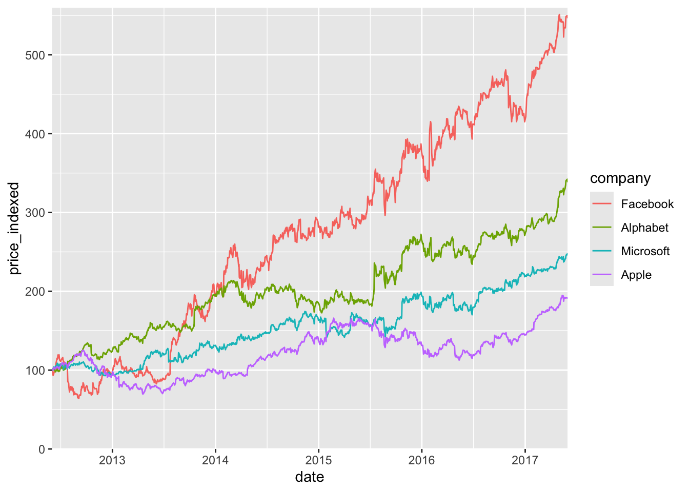
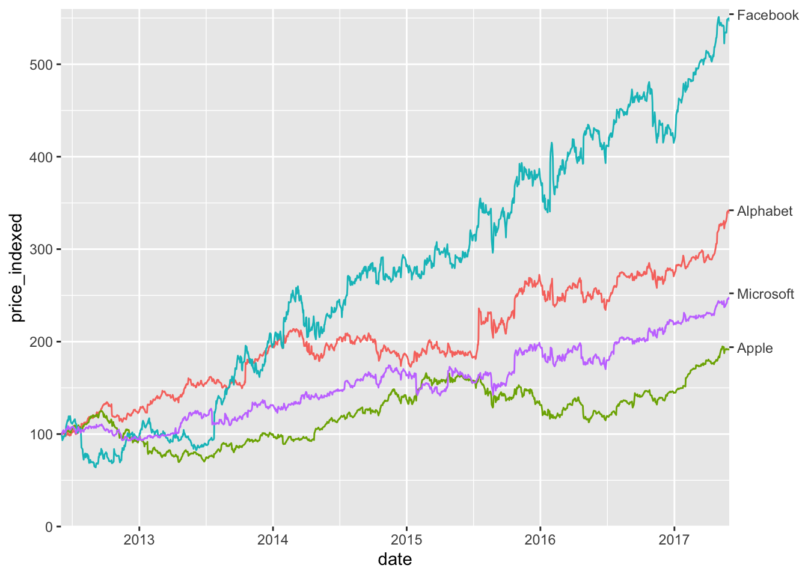
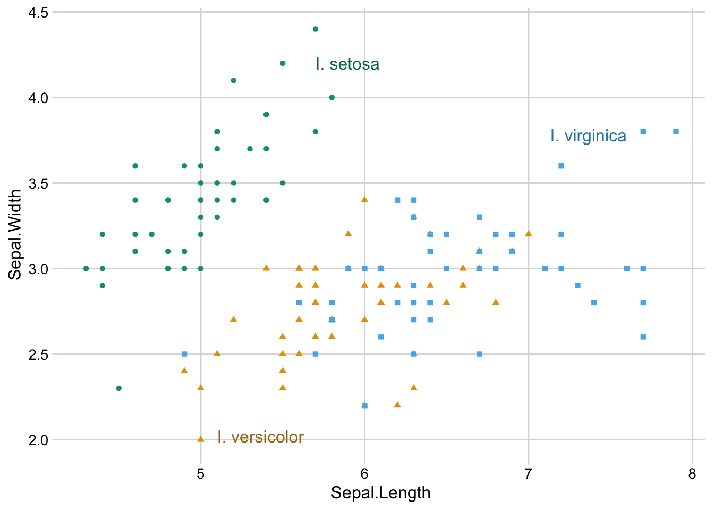

# Run this command to install the required packages.
# You need to do this only once.
install.packages(
c(
"tidyverse", "colorspace", "cowplot", "palmerpenguins"
)
)Effective Data Visualization with ggplot2
Sprucing up your legends
Required packages
Install the required packages:
1. Legend order
By default, ggplot places legend entries in alphabetical order, and that is rarely what we want. See this example:
library(tidyverse)
library(colorspace)
library(cowplot) # for theme functions
tech_stocks <- read_csv("https://wilkelab.org/dataviz_shortcourse/datasets/tech_stocks.csv") |>
mutate(date = ymd(date)) |>
select(company, date, price_indexed)
ggplot(tech_stocks) +
aes(x = date, y = price_indexed) +
geom_line(aes(color = company), na.rm = TRUE) +
scale_x_date(
limits = c(
ymd("2012-06-01"),
ymd("2017-05-31")
),
expand = c(0, 0)
) +
scale_y_continuous(
limits = c(0, 560),
expand = c(0, 0)
)
The visual order of the lines is Facebook, Alphabet, Microsoft, Apple, and we should match it by reodering the categorical variable.
tech_stocks |>
mutate(
company = fct_relevel(
company,
"Facebook", "Alphabet", "Microsoft", "Apple"
)
) |>
ggplot() +
aes(x = date, y = price_indexed) +
geom_line(aes(color = company), na.rm = TRUE) +
scale_x_date(
limits = c(
ymd("2012-06-01"),
ymd("2017-05-31")
),
expand = c(0, 0)
) +
scale_y_continuous(
limits = c(0, 560),
expand = c(0, 0)
)
This is improved, but we can do better. We can get rid of the legend entirely, by adding a secondary axis.
tech_stocks_last <- tech_stocks |>
filter(date == max(date))
ggplot(tech_stocks) +
aes(x = date, y = price_indexed) +
geom_line(aes(color = company), na.rm = TRUE) +
scale_x_date(
limits = c(
ymd("2012-06-01"),
ymd("2017-05-31")
),
expand = c(0, 0)
) +
scale_y_continuous(
limits = c(0, 560),
expand = c(0, 0),
sec.axis = dup_axis(
breaks = tech_stocks_last$price_indexed,
labels = tech_stocks_last$company,
name = NULL
)
) +
guides(color = "none")
Exercises
Replace the legend in this plot with a secondary axis. Also style the plot.
preprints <- read_csv("https://wilkelab.org/dataviz_shortcourse/datasets/preprints.csv") |>
filter(archive %in% c("bioRxiv", "arXiv q-bio")) %>%
filter(count > 0)
ggplot(preprints) +
aes(date, count, color = archive) +
geom_line(linewidth = 0.75) +
scale_y_log10() +
scale_x_date() +
scale_color_manual(values = c("#D55E00", "#0072B2"))
Style this plot and place the legend in the correct order.
library(palmerpenguins)
penguins |>
na.omit() |>
ggplot() +
aes(body_mass_g, sex, fill = species) +
geom_boxplot(position = "dodge")
2. Legend placement and styling
The legend layout code has been completely rewritten in ggplot2 3.5, and is now much more powerful. The following plot from my dataviz book required extensive tricks when I made it in 2019, and now it is possible with the standard options that are available out of the box.
ggplot(mtcars) +
aes(disp, mpg, fill = hp, shape = factor(cyl), size = wt) +
geom_point(color = "white") +
scale_shape_manual(
values = c(23, 24, 21),
name = "cylinders"
) +
scale_fill_continuous_sequential(
palette = "Emrld",
name = "power (hp)",
breaks = c(100, 200, 300),
rev = FALSE
) +
xlab("displacement (cu. in.)") +
ylab("fuel efficiency (mpg)") +
guides(
fill = guide_colorbar(order = 1),
size = guide_legend(
override.aes = list(shape = 21, fill = "#329D84"),
title = "weight (1000 lbs)",
order = 2
),
shape = guide_legend(
override.aes = list(size = 4, fill = "#329D84"),
order = 3
)
) +
theme_half_open() +
background_grid() +
theme(
# lay out the legends inside the legend box horizontally
legend.box = "horizontal",
# lay out each individual legend vertically
legend.direction = "vertical",
# place the legend box inside the plot
legend.position = "inside",
# place the anchor point for the legend box in the top right corner
legend.justification = c(1, 1),
# position the legend in the top right corner
legend.position.inside = c(1, 1),
# center the legend titles on top of the legends
legend.title = element_text(hjust = 0.5),
# add some margin to the legend box
legend.box.margin = margin(7, 7, 7, 7),
# add a white background to the legend box to cover the plot grid
legend.box.background = element_rect(fill = "white", color = "white")
)
Exercises
Take the preprint plot from a prior exercise and move the legend inside the plot.
preprints <- read_csv("https://wilkelab.org/dataviz_shortcourse/datasets/preprints.csv") |>
filter(archive %in% c("bioRxiv", "arXiv q-bio")) %>%
filter(count > 0)
ggplot(preprints) +
aes(date, count, color = archive) +
geom_line(linewidth = 0.75) +
scale_y_log10() +
scale_x_date() +
scale_color_manual(values = c("#D55E00", "#0072B2"))